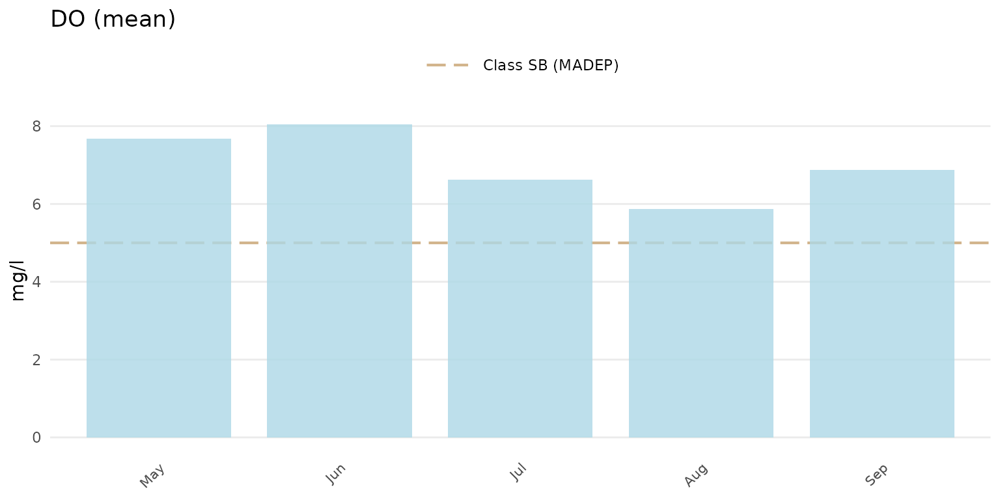
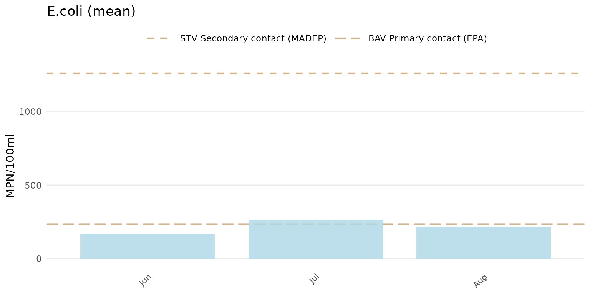

The analysis functions in MassWateR can be used to evaluate trends, summaries, and maps once the required data are successfully imported into R (see the data input and checks vignette for an overview). The results data file that describes the monitoring data for surface waters is required. The data quality objectives file for accuracy is also required to automatically determine plot axis scaling as arithmetic (linear) or logarithmic and to fill results data that are below detection or above quantitation limits. The example data included with the package are imported here to demonstrate how to use the analysis functions:
library(MassWateR)
# import results data
respth <- system.file('extdata/ExampleResults.xlsx', package = 'MassWateR')
resdat <- readMWRresults(respth)
#> Running checks on results data...
#> Checking column names... OK
#> Checking all required columns are present... OK
#> Checking valid Activity Types... OK
#> Checking Activity Start Date formats... OK
#> Checking Activity Start Time formats... OK
#> Checking for non-numeric values in Activity Depth/Height Measure... OK
#> Checking Activity Depth/Height Unit... OK
#> Checking values in Activity Depth/Height Measure > 1 m / 3.3 ft... OK
#> Checking Activity Relative Depth Name formats... OK
#> Warning: Checking Characteristic Name formats...
#> Characteristic Name not used for quality control: Air Temp, Gage
#> Checking Characteristic Name formats... WARNING
#> Checking Result Values... OK
#> Checking QC Reference Values... OK
#> Checking for missing entries for Result Unit... OK
#> Checking if more than one unit per Characteristic Name... OK
#> Checking acceptable units for each entry in Characteristic Name... OK
#>
#> All checks passed (1 WARNING(s))!
# import accuracy data
accpth <- system.file('extdata/ExampleDQOAccuracy.xlsx', package = 'MassWateR')
accdat <- readMWRacc(accpth)
#> Running checks on data quality objectives for accuracy...
#> Checking column names... OK
#> Checking all required columns are present... OK
#> Checking column types... OK
#> Checking for text other than <=, ≤, <, >=, ≥, >, ±, %, AQL, BQL, log, or all... OK
#> Checking Parameter formats... OK
#> Checking for missing entries for unit (uom)... OK
#> Checking if more than one unit (uom) per Parameter... OK
#> Checking acceptable units (uom) for each entry in Parameter... OK
#>
#> All checks passed!Analyze seasonal trends
Seasonal trends can be evaluated using the anlzMWRseason() function. This function summarizes results for a single parameter using boxplots or barplots with seasonal groups assigned to months or weeks of the year. Threshold lines are also shown on the plot to determine if results are near thresholds of interest. The data that are plotted can be filtered by site, dates, or result attributes.
The anlzMWRseason() function uses the results data as a file path or data frame as input. Below, the results are grouped by month using group = "month" and as boxplots using type = "box". A description of the summary statistics shown by a boxplot is provided in the outlier checks vignette. The relevant threshold lines for freshwater environments are shown using thresh = "fresh" (this is the default setting and does not need to be entered explicitly).
anlzMWRseason(res = resdat, param = 'DO', acc = accdat, group = 'month', type = 'box', thresh = 'fresh')
The same data can also be grouped by week using group = "week". The week of the year is shown on the plot as an integer. Note that there can be no common month/day indicating the start of the week between years and an integer is the only way to compare summaries if the results data span multiple years.
anlzMWRseason(res = resdat, param = 'DO', acc = accdat, group = 'week', type = 'box')
If type = "box", points can also be jittered over over the boxplots using jitter = TRUE.
anlzMWRseason(res = resdat, param = 'DO', acc = accdat, group = 'week', type = 'bar', jitter = TRUE)
Barplots can be shown using type = "box". The barplots show the average estimate and a 95% confidence interval for the results defined by the group argument.
anlzMWRseason(res = resdat, param = 'DO', acc = accdat, group = 'month', type = 'bar')
The threshold lines shown on each plot are determined from the thresholdMWR file included with MassWateR. These threshold lines describe relevant state standards or typical ranges in Massachusetts, if applicable for a parameter. Thresholds can be plotted for freshwater or marine environments using the thresh argument as thresh = "fresh" (default) or thresh = "marine", respectively. One or two threshold lines are typically shown, whereas a warning is returned to the console if no thresholds are available for a parameter. Threshold lines can be suppressed by setting thresh = "none". Below, the marine thresholds are shown for dissolved oxygen using the barplot option grouped by month.
anlzMWRseason(res = resdat, param = 'DO', acc = accdat, group = 'month', type = 'bar', thresh = 'marine')
The y-axis scaling as arithmetic (linear) or logarithmic can be set with the yscl argument. If yscl = "auto" (default), the scaling is determined automatically from the data quality objective file for accuracy, i.e., parameters with “log” in any of the columns are plotted on log10-scale, otherwise arithmetic. Setting yscl = "linear" or yscl = "log" will set the axis as linear or log10-scale, respectively, regardless of the information in the data quality objective file for accuracy. Below, the axis for E. Coli is plotted on the log-10 scale automatically. The y-axis scaling does not need to specified explicitly in the function call because the default setting yscl = "auto". The means and confidence intervals will vary between arithmetic and log-scaling if group = "bar".
anlzMWRseason(res = resdat, param = 'E.coli', acc = accdat, group = 'month', type = 'bar')
To force the y-axis as linear for E. Coli, yscl = "linear" must be used. Note that the default linear scaling for dissolved oxygen above is determined automatically.
anlzMWRseason(res = resdat, param = 'E.coli', acc = accdat, group = 'month', type = 'bar', yscl = 'linear')
Results can also be filtered by dates using the dtrng argument. Note that the date format must be YYYY-MM-DD.
anlzMWRseason(res = resdat, param = 'E.coli', acc = accdat, group = 'month', type = 'bar', dtrng = c('2021-05-01', '2021-07-31'))
Finally, the results can be filtered by sites and result attributes using the site and resultatt arguments. These options will filter the results data based on values in the Monitoring Location ID and Result Attribute columns.
anlzMWRseason(res = resdat, param = 'E.coli', acc = accdat, group = 'month', site = 'ABT-077', resultatt = 'Dry')
Modifying the plots
The default plot format should be sufficient in most cases, but it can be modified using common ggplot() plot functions. The plot returned by anlzMWRseason() is a ggplot() plot object and additional components can be added using the + notation. Note that overriding some of the existing plot components may significantly alter the appearance, so use caution.
Below are a few examples of minimal additions to change the standard plot. A single plot object for the original plot is created as p and is modified differently in each example.
Modify plot labels:
p <- anlzMWRseason(res = resdat, param = 'DO', acc = accdat, group = 'month')
p +
labs(
x = "Month",
y = 'Dissolved oxygen (mg/L)',
title = "Seasonal summaries for dissolved oxygen"
)
Modify theme elements:
p +
theme_bw() +
theme(
axis.text = element_text(size = 14),
legend.position = 'bottom'
)
Change the y-axis scale limits:
p +
scale_y_continuous(limits = c(0, 20))